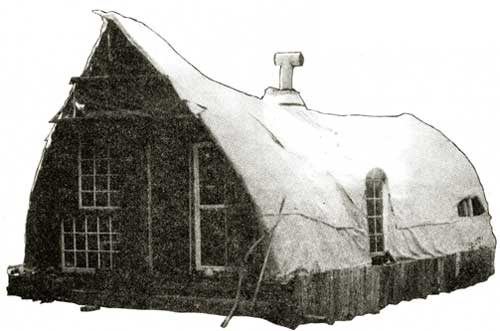
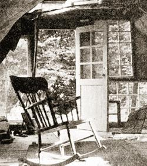
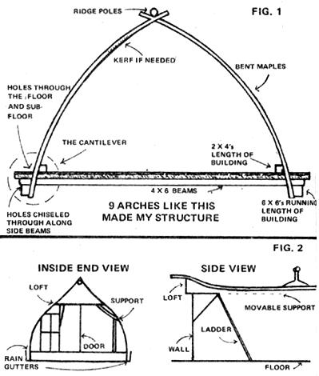
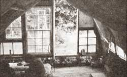
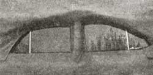
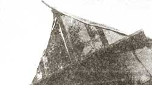
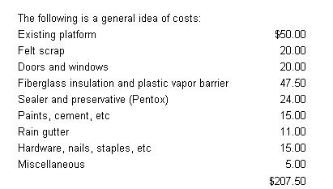

The structure you see in the photos is a second home I've built-more or less singlehanded-in the woods on my 100-acre place in Quebec. The house is 28' X 14', rises 10' at its highest point, and cost just a little over $200. I had a lot of fun putting it together and would like to tell you about the process.
When I first began the project early in 1974, I was partial to a dome of some kind. I'd built models from plastic straws and had an idea of the strength inherent in the triangles of a geodesic structure and the stress distribution of the curved form. Yet I had neither the money nor the inclination to buy the new materials such domes seem to require. What I did have was a platform left from a building I'd torn down . . . so it seemed reasonable to use that as the floor plan for whatever I was going to construct.
But what other resources did I have? Well, there was timber on the place . . . of a sort. All the larger trees had been cut as pulpwood, by a "hurry-up" logging crew that felled many just for being in the way. Other trunks had been bent and then left to grow in that position for four years. Aha! Ready-made arches!
By the time I noticed the pre-formed arches, I'd begun to pay attention to various other irregular-shaped objects lying around my property: car parts (including the rear window of a '55 Ford station wagon) . . . old snow fence wire . . . a coupla bicycle rims . . . a large metal hoop. Also bottles. Lots and lots of bottles.
OK. I decided that the form of my house would follow the shape of the materials I had to work with. There would he many a compound curve . . . and if you doubt the strength of such construction, study domes and drops of water (or just take an egg and try to crush it in the palm of your hand).
I began work in early spring, by girdling the trees I'd need for the frame. (They were sugar maples, and the sap that dripped from them was sheer ambrosia.) These were cut as needed . . . maybe 26 of them to get 18 usable trunks, since not all were curved just the way I wanted them. I used the timbers while they were green and flexible and let them dry while the rest of the construction went on. (The threaded nails I used in framing hold well even after the wood has seasoned and shrunk away from them.)
The framework I set up consisted of nine arches like the one shown in Fig. 1, cantilevered out of the floor on centers of four feet. I simply chiseled holes in the existing platform along the side beams, shoved the ends of the trunks down into the openings, added an interior brace of 2 X 4's running the length of the building . . . and then confronted the problem of joining the tops.
Since I'd left the ends of the house open, I was able to drive my microbus onto the platform to serve as a scaffold. Now and then I'd. tie a rope to the vehicle and pull down a rafter that needed a tighter bend. Even so, I sometimes had to kerf the inner curve of a trunk to increase its flexibility.
I'd originally intended to rent a strapping machine to join the curved timbers at their tops, but when the time came none was available. Then someone suggested that I use stainless steel hose clamps (the ones with the little worm gear tighteners). I did, and supplemented them in most places with suspension straps or carriage bolts. Sometimes I'd notch the joints where the trees crossed to maintain the smoothness of the flowing shape. The ridgepole, which rests on the tops of the arches, is made of two trees with the big ends set on either side of the central chimney space.
I wedged the frame here and there (partly by squeezing the bicycle rims-which have great compressive strength-between the uprights) and then set in five car doors where they'd fit. This gave me operating windows and even a built-in ashtray. A loft was mounted on braces as shown in Fig. 2. (When I'm up there at night, I can see the stars through the station wagon window installed high in the wall.) The house's skeleton was then crisscrossed, "X" fashion, with the salvaged fence wire, and burlap bags were cut open, stretched over the underpinnings, and nailed. Things were taking shape!
Next came the outer covering: a serious consideration, because it had to serve as both roof and walls (besides standing up to the harshness of the elements). The material I found-called "felt", but really more like canvas-turned out to be a real blessing. It comes from the local paper plant, where it's considered scrap once it has served its purpose in the manufacturing process (as a conveyor belt for wet cardboard running through the drying machines).
The biggest piece of felt I bought was maybe 40' X 12', and free of holes. The material is a cardboard brown which bleaches quickly to a tan in sunlight. It looks almost like suede but is as strong as leather. A test I did showed it to be flame-retardant, and it seems to have a bit of insulation value too. Best of all, it's incredibly inexpensive . . . around 74 a pound (or less, if you can develop any rapport with the guy who deals it out at the plant).
I imagine that this substance would make a good cover for a tipi or a fine base for a sprayed-on foam. It could also be covered with latex or concrete paint. I'm told that felt can be used as roofing, but works best on a steep pitch with good drainage. (Be sure to waterproof the material if you use it for such a purpose. I later covered an A-frame barn with untreated felt and found that it acts like a large blotter.)
Anyhow, back to the house. I stretched the felt over the form, nailed the sheets at the edges, and waterproofed the covering with four gallons or so of clear Pentox wood preservative. It was difficult to spread the compound evenly on the absorbent fabric. Another time I might use a tinted product (Pentox also comes in green) to see that no spots were missed. Or I might try another coating . . . one meant for tents, perhaps, or maybe a concrete sealer. Or, if I had the money, I'd apply sprayed-on foam . . . which would both waterproof the exterior and enhance its flowing shape.
With the outer covering finished, I was ready to remove the microbus and get to work on the end walls. (Ah, a vertical surface!) As you can see from the photos, one of them is built up about a foot by means of bottles chinked with fiberglass wool and clay. The threshold is thus raised to about three feet above the ground outside . . . about as deep as the snow gets. The doors open inward anyhow, just in case!
Speaking of doors . . . both those and the windows for the end walls (plus one in the side of the house) were found at country auctions. Using them was a matter of being flexible enough to work around what I had. The problem was more difficult in the south end, where the loft hangs out over the foundation. The windows in the peak were built up from small pieces of glass joined with silicone sealant . . . a great product, if a bit expensive ($5.00 to $6.00 a tube).
When I'd finished the outer walls, I went on to staple batts of fiberglass insulation against the burlap inside the house and add a vapor barrier of two-mil plastic. Finally, the interior was covered with more felt (it was untreated and has remained a nice earth color). The completed wall/ceiling is about four inches thick.
You'll notice that the structure was roughed out for almost no money. Most of the cost was for new materials bought to insulate and protect it . . . and in our climate, that's cash well spent. As winter drew on, I took some further steps: doubled the windows wherever possible, and-as leaks were discovered-chinked them with either fiberglass or oakum. I knew the wind wouldn't be much of a problem because the house is almost surrounded by the forest. Water runoff had been provided for with galvanized steel gutters (recessed behind the barn siding on the lower edge of each outside wall, where they wouldn't show).
I was learning to arc weld at the time, and made a wood heater as my first project. . . basically two-thirds of an oil drum welded to a heat-circulating doughnut-shaped affair. The door I installed in the other end of the stove turned out to be warped and made it hard to hold a fire overnight.
The new building ended up being uninhabited over the winter, for practical reasons (mainly because the goats and their barn were about a quarter of a mile away, near the main house. Also, the latter would have suffered from being unheated . . . and lack of heat made a better stress test for the new place.)
I've snowshoed out to the woods house now and then for evaluations, and so far (as of late February) I can see no structural difficulties even under the weight of eight inches of snow. Many of the arches were put under a downward stress to cancel out such loads . . . and a flexible structure of this kind can absorb many changes in any case. I did find that the covering leaked a bit during one thaw. Come spring (sweet spring!) I'll know how bad the problem is. Perhaps another coat of Pentox will catch the places that didn't get quite enough.
Meanwhile, I can't wait for the water bed to thaw out! Yes, I know I should have emptied it before winter, but have you ever moved a ton or so of water with a hand pump?
I should also mention that I built a wind generator (12 volts) to power the new house . . . and it worked, too, before this winter put it out of commission. For a while there, I was doing the evening milking by wind-powered light.
In conclusion, I can't say enough for the beauty of native (including "found") materials. Someone has said that waste is our only increasing resource. Just look around-especially at the discards of a big industry-and you'll be amazed at how many useful items you'll find. The irregularities do sometimes try one's patience, but when whatever you're building is finally all together the result is satisfying indeed.
One more point: Advice is of limited value, of course, but I think it's a wise person who, before building, takes a year or so to find out, what's available locally and observe the conditions that will affect his future life. His home will then be a true reflection of himself, as one who took the time and energy to create a place of beauty.
|
 The house's south end includes a built-in sleeping loft. |
Chinked bottles raise the doorway above normal snow level. |
 Car doors set into the walls provide operational windows. |
|
 The peak window's panes are glued with silicone sealant. |
 |
 |
|
 |
 |
|